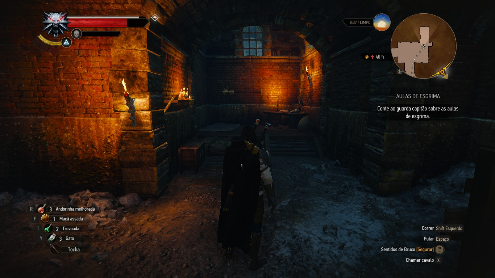
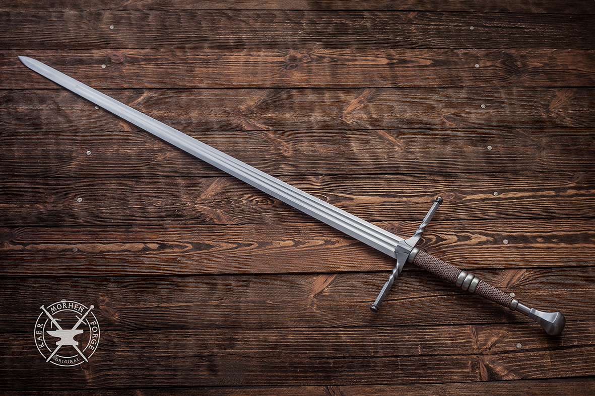

Great, you found a Sword!
As you continue through the left path, you get to a room where some bandit used to live, there's his bed, small furniture
and some sacks. You search around to see if there is something useful...

Its your lucky day! You found a sword in the bandits sacks. You take it with you, the sewers are a dangerous place to be unarmed.
You can't keep going through this path, so you decide to go back and take the left path.
